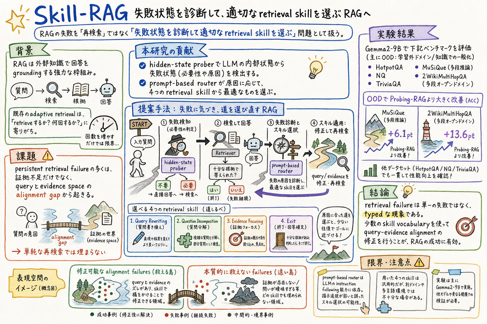

第一の貢献は、post-retrieval failure recovery に hidden-state prober gating と prompt-based skill routing を統合したこと。失敗を検出したあと、単に再検索するのではなく、原因に応じた retrieval action を選ぶ。

どんな論文か
Skill-RAG の中心問いは、RAG がうまく答えられなかったときに、ただ検索を繰り返すだけでよいのか、というもの。既存の adaptive retrieval は、retrieve するか、何回 retrieve するかを制御する方向に寄りがちだった。しかし hard case では、関連文書がまったく無いのではなく、質問の形と証拠空間の合い方が悪く、近いが答えに足りない文書を拾い続けることがある。
論文はこの状態を query-evidence alignment gap として捉える。広すぎる質問は evidence focusing が必要で、複数の前提が絡む質問は decomposition が必要で、表現が文書側の索引とずれている質問は rewriting が必要になる。つまり retrieval failure は一種類の失敗ではなく、型を持った失敗として扱える、という見方である。
Skill-RAG は、hidden-state prober でモデル内部の failure state を検出し、prompt-based skill router で原因を診断する。router は query rewriting、question decomposition、evidence focusing、exit の四つから選び、次の検索前に query または evidence の向きを直す。prober は、検索前と検索後の二段階で gate として働く。
実験では Gemma2-9B を使い、HotpotQA、NQ、TriviaQA を in-domain、MuSiQue と 2WikiMultiHopQA を out-of-domain として評価する。Skill-RAG は Probing-RAG に対して、特に OOD で大きく改善し、MuSiQue で ACC +6.1、2WikiMultiHopQA で +13.6 を示す。
面白いのは、skill を増やせば増やすほどよい、という結論ではないこと。representation-space analysis では、四つの skill vocabulary は failure state の構造に合っている一方、LLM に六つ以上の skill を自動生成させるとクラスタ構造が崩れる。少数のよく切られた skill が、RAG の失敗回復には効く。
Skill-RAG は、RAG の post-retrieval failure を、再検索の回数調整ではなく、失敗型に応じた skill selection として扱う論文である。
対象にしているのは、retrieval をしても答えが直らない persistent failure である。論文は、その多くが relevant evidence の不在だけではなく、query と evidence space の alignment gap に由来すると見る。
提案手法は、軽量な hidden-state prober と prompt-based skill router を組み合わせる。prober はモデルの内部状態から、回答準備ができているか、retrieval や recovery が必要かを判定する。
課題と貢献
第二の貢献は、query rewriting、question decomposition、evidence focusing、exit という四つの retrieval skill を transferable skill vocabulary として整理したこと。RAG の失敗回復を、再利用できる skill taxonomy として扱っている。
第三の貢献は、複数 benchmark で、prober-only baseline より OOD dataset で大きく改善することを示したこと。単純な retrieval gate だけではなく、failure-conditioned routing が効いている。
第四の貢献は、failure representation space の分析で、失敗状態が skill ごとに構造化され分離可能な領域を持つことを示したこと。query-evidence misalignment は monolithic ではなく typed な現象だという主張を支えている。
手法のしくみ
1
まず、入力質問に対して hidden-state prober が、parametric knowledge だけで答えられるか、retrieval が必要かを判定する。
2
retrieval が必要なら、標準的な BM25 retrieval を行い、取得した evidence を条件にモデルが回答を生成する。
3
生成後の hidden state をもう一度 prober が見て、回答状態が十分か、まだ failure state かを判定する。
4
failure state が検出されると、prompt-based skill router が、元の質問、失敗した reasoning と answer、現在の evidence を受け取り、misalignment の原因を診断する。
5
router は query rewriting、question decomposition、evidence focusing、exit の四つから選ぶ。選ばれた skill が query または evidence の向きを直し、次の retrieval round に入る。
6
ループは、prober が十分と判定する、router が exit を選ぶ、または最大 retrieval round に達するまで続く。
検証結果
HotpotQA、NQ、TriviaQA を in-domain、MuSiQue と 2WikiMultiHopQA を OOD として、Gemma2-9B で評価している。すべての方法は BM25 retriever を使う。
Skill-RAG は Probing-RAG に対して、MuSiQue で ACC +6.1、2WikiMultiHopQA で +13.6 を示す。prober gating だけでなく、failure-conditioned skill routing が OOD hard case に効いている。
HotpotQA、NQ、TriviaQA でも competitive または state-of-the-art に近い性能を示す。特に ACC では Probing-RAG と同等以上の結果が多い。
三回の標準 retrieval 後も間違う hard case の hidden-state embedding を見ると、alignment gap 系の修正可能な失敗と、retriever limitation や missing knowledge に近い irreducible failure が分かれる。
四つの skill では cluster が収縮し、修正可能な失敗が減る。一方で、LLM に六つ以上の skill を自動生成させると、cluster structure が崩れ、過度に細かい skill set が routing を難しくする可能性が示される。
My Hero Academia の映画公開日の例では、Probing-RAG は再検索で off-topic な band に drift する。Skill-RAG は query rewriting を選び、Japan release date へ query を直して正しい July 5, 2018 に到達する。
限界と読みどころ
skill router は prompt-based なので、基盤 LLM の instruction following 能力に依存する。弱いモデルでは診断品質が落ちる可能性がある。
四つの skill vocabulary は open-domain QA benchmark から導かれている。科学論文、多言語 corpus、企業内文書など、retrieval characteristic が違う領域では分類が足りない可能性がある。
実験は主に Gemma2-9B で行われている。モデルサイズやアーキテクチャをまたいだ広い検証は今後の課題として残る。
retriever は BM25 で統一されている。dense retrieval や hybrid retrieval、agentic search harness との組み合わせでは、failure state や skill の効き方が変わる可能性がある。
読みながら見る図表や節
- Figure 1 は、Skill-RAG の全体パイプラインを見る図。training data construction、prober training、skill-based RAG の三つを分けている。
- Section 3.1 は prober training の要点。no retrieval と single-step retrieval の出力から hidden state と correctness label を作り、layer ごとの prober を平均する。
- Section 3.2 は四つの skill の定義を見る場所。rewriting、decomposition、focusing、exit がそれぞれどの失敗型に対応するかを確認できる。
- Table 1 は最重要の結果表。in-domain と OOD で、No Retrieval、Single-step RAG、FLARE、DRAGIN、Adaptive-RAG、Probing-RAG、Skill-RAG を比べている。
- Figure 2 は representation-space analysis。skill routing によって修正可能な failure cluster が縮む一方、skill を増やしすぎると構造が崩れるという読みどころがある。
- Table 2 は case study。単純な再検索が query drift を悪化させる一方、query rewriting が正しい証拠へ戻す流れを具体例で見せている。
次に読むなら
- Self-RAG、Adaptive-RAG、FLARE、DRAGIN、Probing-RAG を並べると、retrieval の trigger、depth、critique、hidden-state gate、skill routing の違いが見えやすい。
- Direct Corpus Interaction や Is Grep All You Need? と合わせると、retrieval skill を選ぶ以前に、corpus をどう歩けるようにするか、検索結果をどう agent に渡すかという harness 側の論点に接続できる。
- 実務 RAG に引くなら、失敗ログを「再検索すべき」だけで終わらせず、rewrite が必要か、分解が必要か、証拠を絞るべきか、そもそも exit すべきかに分類してみるとよい。
- agent skill 運用の文脈では、skill を増やすほど良いのではなく、失敗空間の構造に合った少数の skill vocabulary を保つ、という設計原則として読める。
読後Q&A
この論文の中心問いは？
RAG が検索後も失敗したとき、ただ再検索するのではなく、失敗状態を診断して適切な retrieval skill を選べるか、という問い。
Skill-RAG の skill とは何？
retrieval を直す操作の種類。query rewriting、question decomposition、evidence focusing、exit の四つが定義されている。
hidden-state prober は何をする？
モデルの hidden state から、回答できる状態か、retrieval や recovery が必要な failure state かを判定する軽量な分類器として働く。
なぜ出力だけでなく hidden state を見るの？
論文は、retrieval が詰まっている状態がモデル内部表現に構造として現れると見ている。出力後の retry signal だけでなく、内部状態を gate に使うのが狙い。
query rewriting はどんなときに使う？
質問の表面表現が corpus の索引や文書表現とずれているときに、retrievable evidence に合う形へ query を書き換える。
question decomposition はどんなときに使う？
multi-hop query の前提が絡み合っていて、一度の検索では必要な推論ステップを分けにくいときに、複数の sub-query へ分解する。
evidence focusing はどんなときに使う？
質問が広すぎて、関係はあるが答えに足りない文書を拾い続けるときに、欠けている証拠スロットを狙って検索を絞る。
exit skill は諦めるだけ？
単なる失敗ではなく、証拠不足やモデル能力限界など、retrieval を続けても改善しにくい irreducible case を識別し、不要な推論コストを避ける役割。
一番重要な実験結果は？
OOD benchmark で Probing-RAG より大きく改善したこと。MuSiQue で ACC +6.1、2WikiMultiHopQA で +13.6 を示している。
skill は多いほど良い？
この論文の結果では、そう単純ではない。LLM に六つ以上の skill を自動生成させると failure representation の cluster structure が崩れ、routing が難しくなる可能性が示される。
実務 RAG に使うなら何を見る？
失敗ログを、rewrite、decompose、focus、exit のどれに近いか分類する。単に top-k や検索回数を増やす前に、query と evidence space のずれ方を見る。
この論文の限界は？
router が prompt-based で LLM 能力に依存すること、四つの skill が別ドメインで十分とは限らないこと、実験が主に Gemma2-9B に限られること。